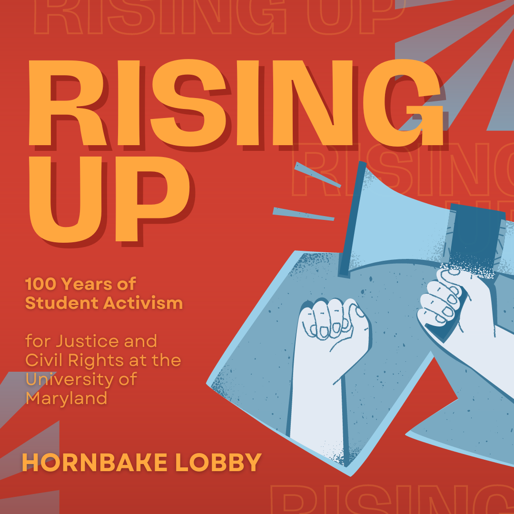
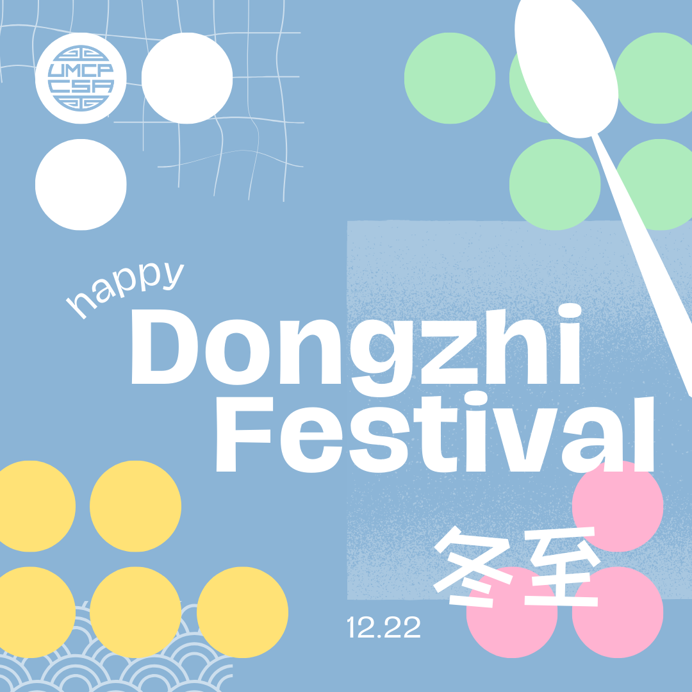

Chinese holiday to honor the
deceased, so the design is modelled after a grave
Club event to make red envelopes,
a traditional gift; top of graphic includes the flap design
The design puts you right at
the table!
Mock PSA for university
exhibit, utilizing its branding
A spring-like, retro theme
for our laid back thrift sale
Sketchy and creative layout
in a call for journal submissions
Fundraiser ad inspired by Trader Joes' in-store boards, and a chalkboard look!
Hand-drawn picnic collab event graphic, featuring a little bunny and cat out for tea

A more minimalist take on the Chinese festival that predominantly features tangyuan, or colorful rice balls
Playful and Olympic-esque competition event
Workshop graphic featuring clean Google branding and the colors of Flutter, an app development framework
 Dreamy and wispy styled celebration of the fabled Chinese romance
Dreamy and wispy styled celebration of the fabled Chinese romance